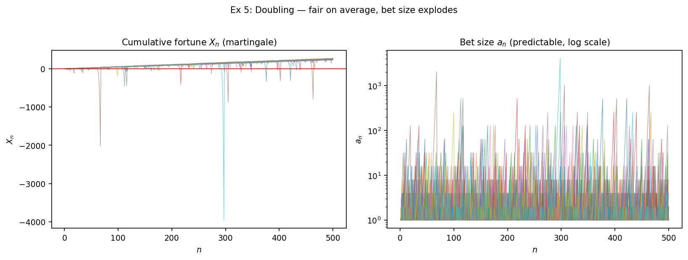
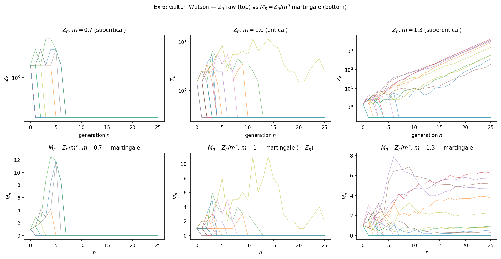

연구 ▷ HST ▷ 마팅게일이란 무엇인가 — 시뮬 6예제로 보는 강의노트
마팅게일은 “평균적으로 공정한 게임” 의 수학적 추상이다. 정확하게는 — 적분가능한 process \(\{X_n\}_{n \geq 0}\) 이 filtration \(\{\mathcal F_n\}\) 에 적응되어 있고 (\(X_n \in \mathcal F_n\), \(E|X_n| < \infty\)) 각 step 의 조건부 평균이 현재 값과 같을 때, 즉 \(E[X_{n+1} \mid \mathcal F_n] = X_n\), 를 만족할 때 \(\{X_n\}\) 을 \(\mathcal F_n\)-마팅게일이라 부른다. 부등호 \(\geq\) 면 submartingale, \(\leq\) 면 supermartingale. 정의를 처음 보면 추상적인데, 시뮬로 한두 path 만 그려보면 어떤 process 가 마팅게일인지가 즉각 와닿는다. 본 글은 6개 예제로 그 직관을 짚는다. 모든 시뮬은 같은 헤더로 시작한다.
import numpy as np
import matplotlib.pyplot as plt
rng = np.random.default_rng(20260522)
NPATH = 30; T = 2000
t = np.arange(1, T + 1)- 예제 1 — fair random walk. \(\epsilon_i \in \{-1, +1\}\) 각 prob \(1/2\), \(X_n = \sum \epsilon_i\). natural filtration \(\mathcal F_n = \sigma(\epsilon_1, \dots, \epsilon_n)\) 에서 \(E[X_{n+1} \mid \mathcal F_n] = X_n + E[\epsilon_{n+1}] = X_n + 0 = X_n\) 이므로 마팅게일.
eps1 = rng.choice([-1.0, 1.0], size=(NPATH, T)) # ε_i ∈ {±1}, i.i.d. fair
X1 = np.cumsum(eps1, axis=1) # X_n = Σ ε_i
fig, ax = plt.subplots(figsize=(8, 4))
for k in range(NPATH):
ax.plot(t, X1[k], lw=0.5, alpha=0.5, color="C0")
ax.plot(t, X1.mean(axis=0), lw=1.8, color="k", label="ensemble mean (30 paths)")
ax.axhline(0, color="r", lw=0.8); ax.legend()
30 path 의 평균 (굵은 검정선) 이 시간이 흘러도 0 근처에 머무는 게 마팅게일의 본질이다. 개별 path 는 자유롭게 진동하지만 ensemble 평균은 stationary — 이게 “공정” 의 정량적 의미.
- 예제 2 — 편향된 walk. \(\epsilon_i = +1\) (확률 \(p\)) / \(-1\) (확률 \(1-p\)). \(E[\epsilon] = 2p - 1\). \(p = 0.55 \Rightarrow E[\epsilon] = +0.10 \Rightarrow E[X_{n+1} \mid \mathcal F_n] > X_n\) — submartingale. \(p = 0.45 \Rightarrow\) supermartingale.
def biased(p): return np.where(rng.random(size=(NPATH, T)) < p, 1.0, -1.0)
X2_sub = np.cumsum(biased(0.55), axis=1) # submartingale
X2_sup = np.cumsum(biased(0.45), axis=1) # supermartingale
fig, ax = plt.subplots(figsize=(8, 4))
ax.plot(t, X2_sub.mean(0), lw=1.8, color="darkgreen", label="p=0.55 submart. (drift up)")
ax.plot(t, X2_sup.mean(0), lw=1.8, color="darkred", label="p=0.45 supermart. (drift down)")
# (individual paths 도 light 색으로 같이 그림)
두 ensemble 평균이 ±0.10 의 기울기로 갈라진다. 마팅게일은 sub 와 super 사이의 균형점 — drift 가 정확히 0 인 한 줄. 두고두고 쓰이는 사실.
- 예제 3 — variance compensation. Fair walk 의 제곱 \(X_n^2\) 은 평균 \(n\) 으로 자라서 마팅게일이 아니다. 그런데 \(n\) 만큼 빼주면 \(Y_n := X_n^2 - n\) 이 마팅게일.
\[ E[X_{n+1}^2 \mid \mathcal F_n] = X_n^2 + 2 X_n E[\epsilon_{n+1}] + E[\epsilon_{n+1}^2] = X_n^2 + 0 + 1 \;\Rightarrow\; E[Y_{n+1} \mid \mathcal F_n] = X_n^2 + 1 - (n+1) = Y_n. \]
Y3 = X1 ** 2 - t[None, :] # X1 그대로 재사용
fig, ax = plt.subplots(figsize=(8, 4))
for k in range(NPATH):
ax.plot(t, Y3[k], lw=0.5, alpha=0.5, color="C4")
ax.plot(t, Y3.mean(0), lw=1.8, color="k"); ax.axhline(0, color="r")
평균이 0 근처에 머문다. 이 trick 의 일반화가 Doob-Meyer 분해 (submartingale = martingale + predictable increasing). HST 분석에도 자주 쓰인다.
- 예제 4 — Pólya urn. 항아리에 흰 1개, 검 1개로 시작. 매 step 무작위 추첨, 그 색 +1. 흰 비율 \(M_n := W_n/(W_n + B_n)\) 이 \([0,1]\) 위 마팅게일. 한 줄 검증:
\[E[M_{n+1} \mid \mathcal F_n] = M_n \cdot \tfrac{W_n + 1}{N_n + 1} + (1-M_n) \cdot \tfrac{W_n}{N_n + 1} = \tfrac{M_n N_n + M_n}{N_n + 1} = M_n.\]
def polya_path(T):
W, B = 1, 1; Ms = np.empty(T)
for n in range(T):
if rng.random() < W / (W + B): W += 1
else: B += 1
Ms[n] = W / (W + B)
return Ms
M4 = np.array([polya_path(T) for _ in range(NPATH)])
# left: path, right: M_n[-1] 의 histogram (각 path 의 limit)
마팅게일이고 \([0,1]\) 위 uniformly bounded — Doob 의 마팅게일 수렴 정리로 \(M_n \to M_\infty\) a.s. 가 어떤 random 극한으로 수렴. 흥미로운 점은 \(M_\infty\) 가 결정론적 상수가 아니라 Uniform(0,1) 분포의 random variable 이라는 사실. 시뮬 오른쪽 histogram 이 그걸 보여준다. “마팅게일이 수렴한다고 그 극한이 결정론적이라는 뜻은 아니다” — 마팅게일 수렴은 ensemble 평균이 stationary 라는 것뿐, 개별 path 의 운명은 path-dependent.
- 예제 5 — Doubling strategy. \(\epsilon_i = \pm 1\) fair, 베팅 \(a_n\) 은 직전 결과만 봄 (predictable). 잃으면 베팅 2배, 이기면 1로 reset. 누적 손익 \(X_n := \sum a_i \epsilon_i\). predictable 베팅의 곱은 마팅게일을 transform 으로 보존하므로 (Durrett Thm 4.2.8), \(X_n\) 자체가 마팅게일.
def doubling_path(T):
cur_bet = 1.0; X = 0.0
Xs = np.empty(T); bets = np.empty(T)
for i in range(T):
eps = 1.0 if rng.random() < 0.5 else -1.0
X += cur_bet * eps
Xs[i], bets[i] = X, cur_bet
cur_bet = 1.0 if eps > 0 else min(cur_bet * 2.0, 2**20)
return Xs, bets
# 20 paths × T=500
왼쪽 path 들이 0 근처에서 진동 — 평균은 공정. 하지만 베팅 자체는 log scale 로 그려야 보일 정도로 폭발한다. 이게 마틴게일 도박법의 본질 — 평균적으로 공정하지만 한 path 의 베팅 분산이 무한. 실제 도박장에서 무너지는 이유는 유한한 자본 때문이지 마팅게일 성질 때문이 아니다.
- 예제 6 — Galton-Watson branching. 한 generation 의 인구 \(Z_n\) 이 다음 세대에서 \(Z_{n+1} = \sum_{i=1}^{Z_n} \xi_i\), \(\xi_i \overset{\text{iid}}{\sim} \text{Poisson}(m)\). \(m\) 이 평균 자손 수. \(Z_n\) 자체는 마팅게일이 아니지만 (\(m \neq 1\) 이면 평균이 \(m^n\) 으로 자람), 정규화 \(M_n := Z_n / m^n\) 이 마팅게일.
\[E[Z_{n+1} \mid \mathcal F_n] = m \cdot Z_n \;\Rightarrow\; E[M_{n+1} \mid \mathcal F_n] = \tfrac{E[Z_{n+1} \mid \mathcal F_n]}{m^{n+1}} = \tfrac{Z_n}{m^n} = M_n.\]
def gw_path(m, n_steps, max_pop=10**6):
Zs = [1]
for _ in range(n_steps):
z = Zs[-1]
if z == 0: Zs.append(0)
else: Zs.append(min(rng.poisson(m, size=z).sum(), max_pop))
return np.array(Zs)
T_gw = 25; n_paths_gw = 20
Z_super = np.array([gw_path(1.3, T_gw) for _ in range(n_paths_gw)])
Z_crit = np.array([gw_path(1.0, T_gw) for _ in range(n_paths_gw)])
Z_sub = np.array([gw_path(0.7, T_gw) for _ in range(n_paths_gw)])
t_gw = np.arange(T_gw + 1)
M6_super = Z_super / (1.3 ** t_gw[None, :])
M6_crit = Z_crit / (1.0 ** t_gw[None, :])
M6_sub = Z_sub / (0.7 ** t_gw[None, :])
위 행은 raw \(Z_n\) 의 폭발/멸종 거동, 아래 행은 정규화 \(M_n\) 의 마팅게일 거동. Subcritical (\(m = 0.7\)) 에서는 인구가 빠르게 멸종 (\(Z_n = 0\)), \(1/m^n\) 가 폭발해서 \(M_n\) 거동이 path 별로 갈림. Critical (\(m = 1\)) 에서는 \(M_n = Z_n\) 자체 — 확률 1로 멸종하지만 그 과정이 매우 느려서 평균이 1을 유지 (마팅게일 보존). Supercritical (\(m = 1.3\)) 에서는 폭발 (\(M_n\) 이 finite random limit) 또는 멸종 (\(M_n \to 0\)). 양쪽 결과의 확률이 멸종 확률 이라는 그 자체로 유명한 양 — 마팅게일 평균 1 = 멸종확률·0 + 생존path 의 평균 limit, 으로 식이 닫힌다.
여섯 예제를 한 줄로 묶으면 — 마팅게일은 결정론적 stationary 가 아니라 ensemble-평균 stationary. 개별 path 는 자유롭게 진동하거나 폭발하거나 random limit 을 가질 수 있지만, 매 step 의 조건부 평균 변동이 정확히 0 이라는 그 한 조건이 모든 path 를 한 쇠줄로 묶고 있다. 이게 마팅게일이 도박, 인구 동력학, 강화학습, 금융, HST 의 height 잔차 등 어디서나 자연스럽게 튀어나오는 이유다. “평균이 변하지 않는다” 라는 가장 약한 통제만으로도 정리의 칼날이 살아남는다.
마팅게일이 살아남으면 어떤 일이 일어나는가 — SLLN, CLT, optional stopping, concentration — 은 다른 글의 주제 (260522_f2fd96.html Durrett 4.5.3 + HST Theorem C Step 1 적용 글).
전체 시뮬 코드와 raw 데이터는 회사 루트의 260522_리이_마팅게일이무엇인지시뮬.py 와 results/numeric/260522_리이_마팅게일이무엇인지시뮬.py/raw.npz. random seed 모두 20260522, NPATH=30 (Ex 5·6 은 20), T=2000 (Ex 5 는 500, Ex 6 은 25 generation).